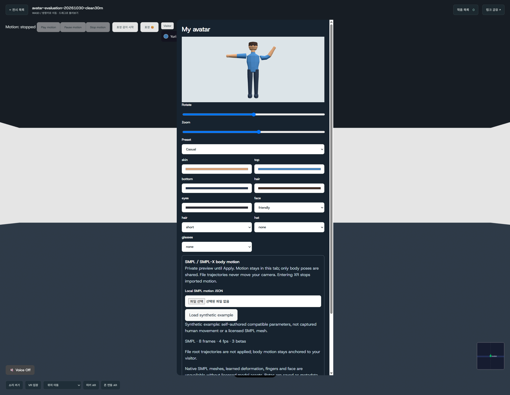
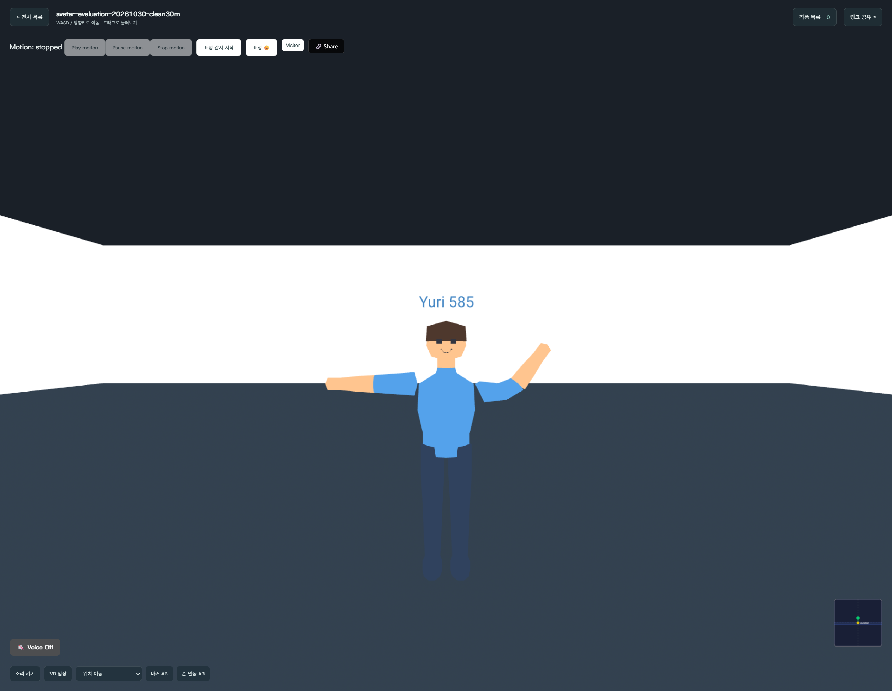
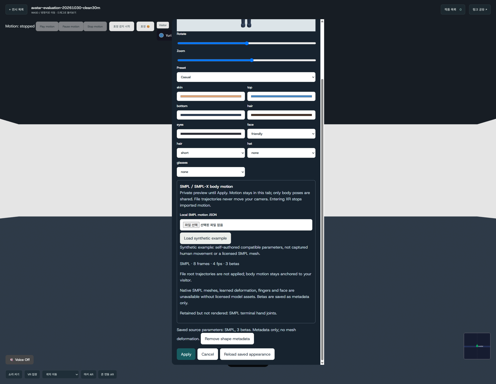

SMPL body motion on the current humanoids
Load compatible SMPL or SMPL-X axis-angle JSON, preview it privately, then Apply to share body motion through the existing core22 relay. No licensed model assets are needed for this compatibility layer.
Try the included example
Open Visitor → Customize, choose a humanoid, and select Load synthetic example. This self-authored elbow wave is compatible parameter data, not captured human movement. Cancel stays private; Apply starts playback only after a successful save. The room toolbar pauses, resumes, or stops playback.

Safe, explicit boundaries
- 8 MiB JSON, 1800 frames maximum, 1–120 fps.
- SMPL 69 body floats; SMPL-X 63. Full hand axis-angle channels may be retained but are not rendered. PCA hands are rejected.
- File trajectories never move the camera. XR entry clears playback.
- Only optional
{model, betas}metadata is saved with appearance; clips are not stored or restored. - The live packet remains 392 bytes.
Observed development results
- 14 focused frontend tests and 10 schema tests passed.
- TypeScript check and production build passed; existing bundle warnings remain.
- Two actual Chrome pages: preview/Cancel privacy, save/reload, changing observer elbow, pause/resume, loop and Stop verified.
- Paused elbow delta: 0. Camera stayed at [0, 1.6, 0] throughout playback.


Scope of this evidence
This is a short desktop feature smoke check, not a new performance evaluation. No physical XR device, emulated XR rendering, exhaustive regression suite, or performance matrix was run. The existing Three.js multiple-instance console warning and Vite chunk warnings were observed; this feature adds no Three dependency.
Usage, JSON contract and implementation boundaries · Historical avatar evaluation (unchanged measured build)